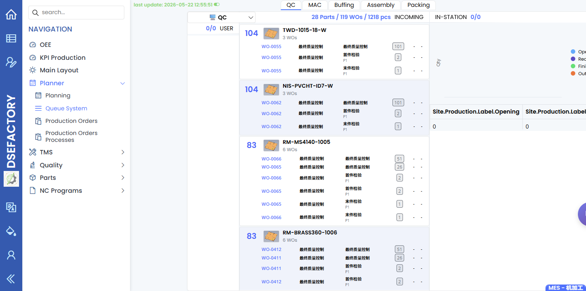
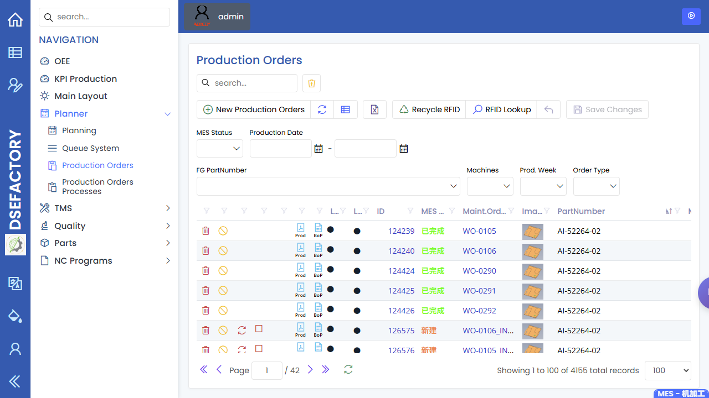
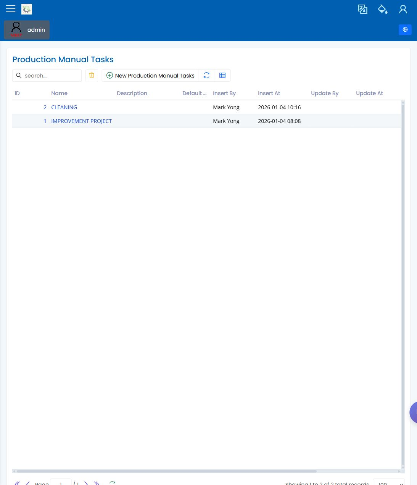

Production Supervisor Manual
English | zh-CN
You are the production supervisor or line lead. You watch the current shift, keep released work moving, coordinate operators, and decide when a work order issue must be escalated to planning, engineering, quality, or administration.
Shift Flow
Before shift
|
v
Review released WOs + machine queues
|
v
Assign attention: operators, machines, materials, quality
|
v
Monitor queue, dashboards, output, downtime, quality holds
|
v
Resolve blockers or escalate
|
v
End shift handoverScreens You Use Most
| Screen | What you do here |
|---|---|
| Queue System | See what should run next by machine or line. |
| Planning | Check the scheduled load and confirm whether a late change is already reflected. |
| Production Orders | Inspect WO status, quantities, nested orders, and available status actions. |
| Dashboards | Open OEE, KPI Production, and Main Layout for high-level signals; treat metric definitions as pending owner confirmation. |
| Manual Tasks | Review task definitions and confirm where assigned manual work is tracked in the demo. |
| Inspection Records | Check whether quality failures or pending inspections are blocking production. |
Before-Shift Checklist
- Open Queue System and confirm the
first jobs for each machine or line.
- Open Planning to compare schedule versus
the queue.
- Check Production Orders for any
released WOs with missing quantity, due date, recipe, or machine assignment.
- Check quality holds in Inspection Records
or NCR.
When Something Blocks Production
| Blocker | First screen | Escalate to |
|---|---|---|
| WO is not released or not scheduled | Production Orders, Planning | Planner |
| Machine capability or NC program is wrong | Machines, NC Programs | Production engineer |
| Inspection failed or NCR is open | Inspection Records, NCR | Quality engineer |
| User cannot access a page | Users and Roles | Administrator |
End-Shift Handover
Record or communicate:
- WOs completed, still running, or blocked.
- Machine downtime and unresolved machine issues.
- Quality failures, NCR numbers, and inspection records that need follow-up.
- Any manual tasks that remain open.
- Any status actions performed on WOs, especially Cancel, Reset, or Force-Close.
Screenshots
Recommended screenshots for this role:
| Capture | Suggested page |
|---|---|
| Shift queue | Queue System |
| Planning board | Planning |
| WO status/action area | Production Orders |
| Main production dashboard | Dashboards screenshot request |
| Manual task list | Manual Tasks |
| Inspection record lookup | Inspection Records |

The queue screenshot shows the authenticated shift view used to confirm what is waiting by station and where execution is blocked.

The production orders screenshot shows the status and action area supervisors use when escalating WO blockers.
The Dashboards pages still need separate OEE, KPI Production, and Main Layout screenshots before this role page can describe those signals in detail.

The Manual Tasks screenshot shows the task-definition page. Use the demo's queue or reporting screen to confirm assigned manual work.

The inspection records screenshot shows where supervisors can check saved inspection outcomes when quality status blocks production.